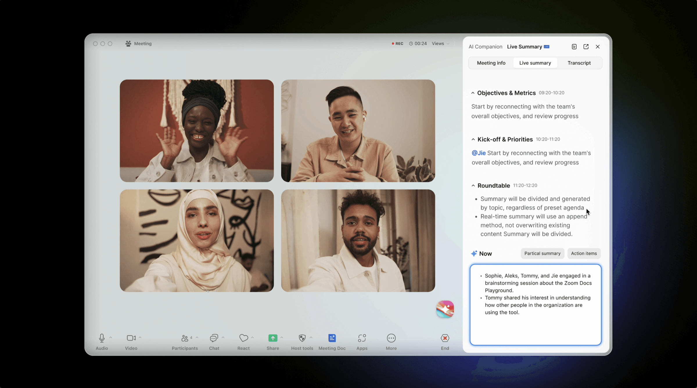
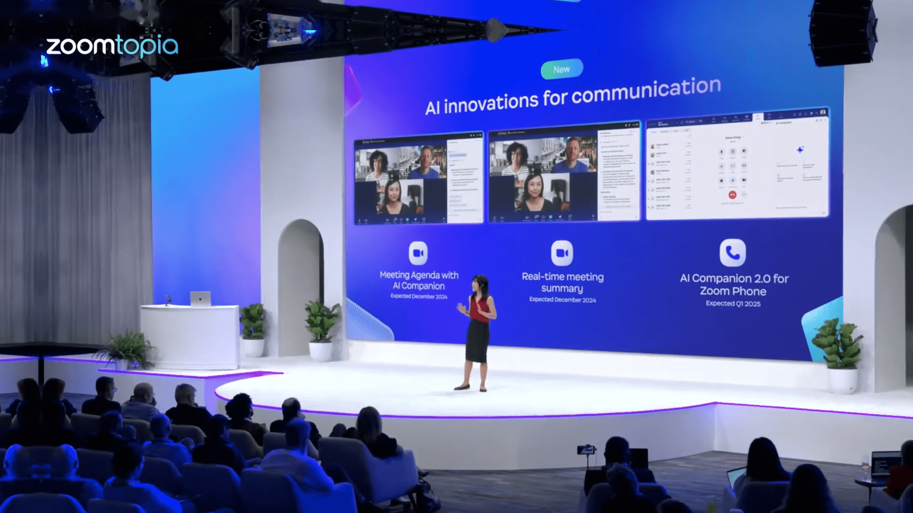
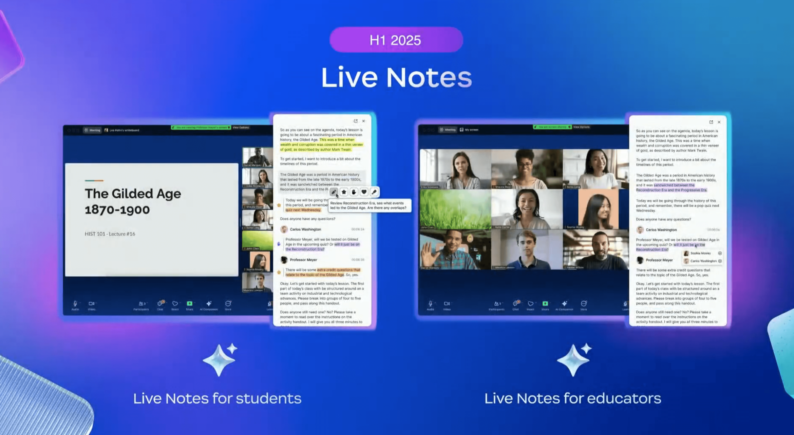
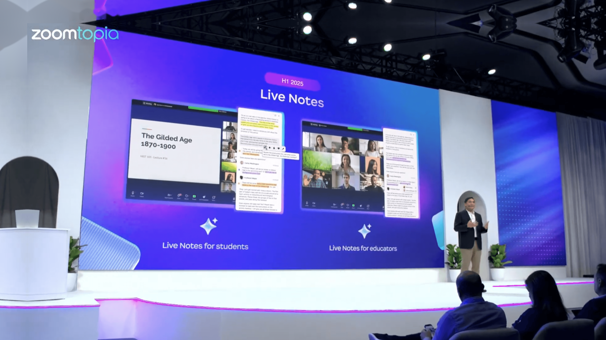
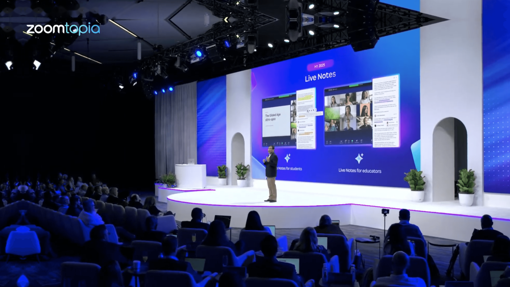

Zoom/AI Meeting
As one of the two core designers for Zoom's top feature of the year—AI empowering the full meeting lifecycle—I led the experience design for three key modules. This strategic initiative achieved a 47% user adoption rate in pre-launch testing and was showcased at Zoomtopia, correlating with a 20% increase in the company's stock price following the announcement. The feature has now officially launched.
Achieving true human-AI collaboration in meetings is a complex and difficult challenge.
With data from current work scenarios suggesting a staggering amount of time is spent on meeting management alone. How can AI genuinely help improve meeting efficiency? What does this new collaborative process actually look like?
Our design strategy was to deconstruct the experience based on roles and scenarios.
We mapped the core pain points of Hosts and Participants across the three key phases—pre-meeting, in-meeting, and post-meeting—to ensure our AI delivers the right value, to the right role, at the right time.




The features were prominently featured at Zoomtopia 2025, and Phase I has now been fully launched.
AI Smart Agenda
Auto-generates agendas to pre-align teams for focused, productive meetings.
AI Live Summary
Generates real-time summaries by topic and @mentions stakeholders at key moments, allowing focused participation exactly when needed.
Meeting Managment
Centralizes all meeting assets to create a shared source of truth for all participants.
Design can help prove value to drive strategy
I saw firsthand how design can be a catalyst for strategy. Our team initiated this major project bottom-up by using rapid design prototypes to visualize the AI-driven concept. This tangible vision was crucial in securing leadership buy-in and resources. We then pursued a phased launch, using positive data and user feedback from each step to build momentum. This data-driven approach earned us greater influence and successfully aligned other departments to support our vision.
Alignment is the engine
This project reinforced that on large-scale initiatives, communication isn't just a soft skill—it's the engine. My role required constant alignment with designers from multiple departments to synthesize their unique contexts. I worked closely with cross-functional engineers to clearly articulate design details and requirements, while just as importantly, understanding their technical priorities and constraints. Proactive, clear communication was the foundation that enabled our team to move forward efficiently.